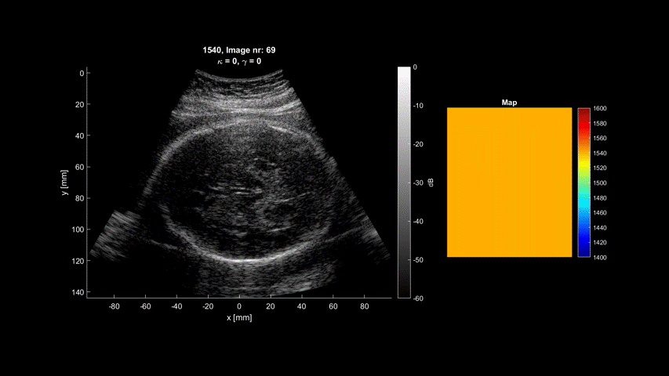
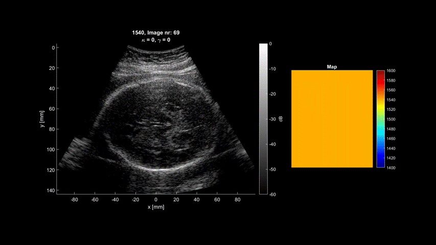
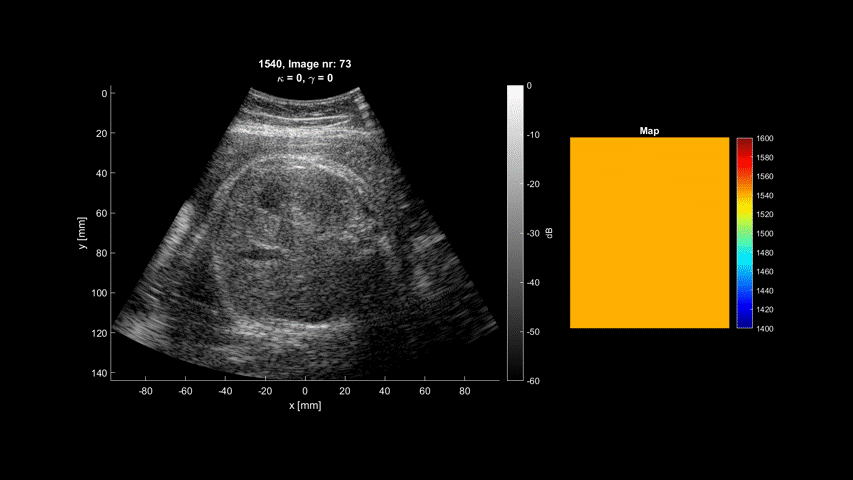
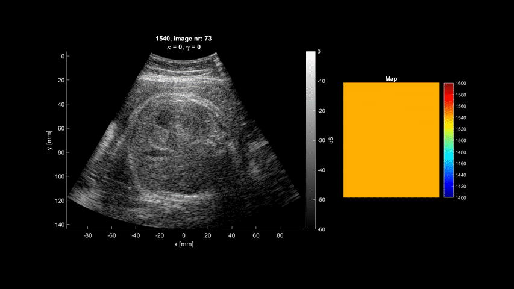
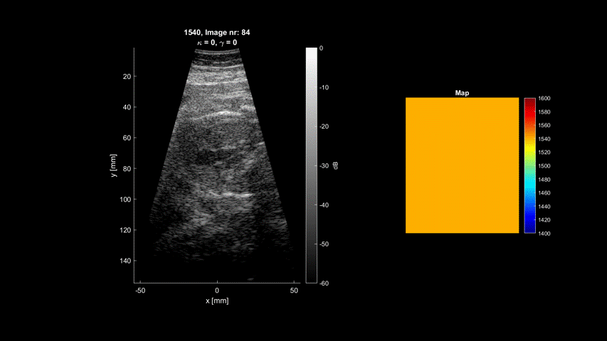
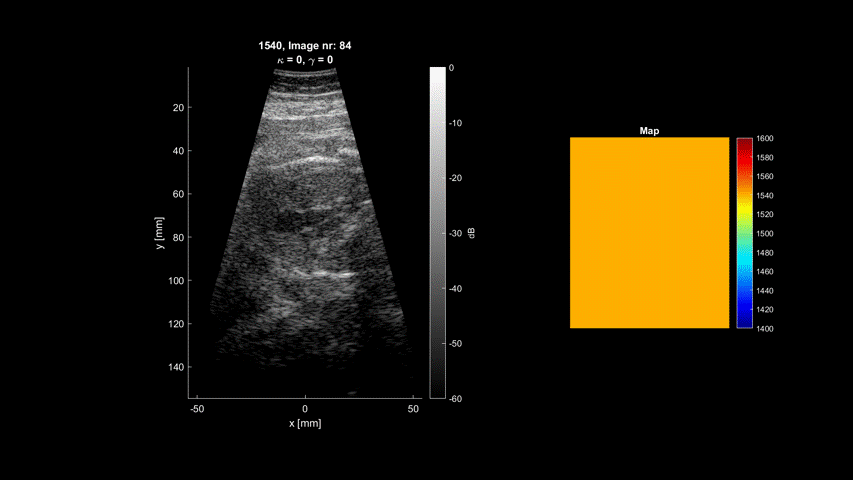

This page contains the imaes from the results section of my masters thesis.
 

 



 

Regular and Regular Median
Regular and Optimized
Decimated scan with D/10 and D/20
PQD with Map and Median
PQD and both PQD and Decimation